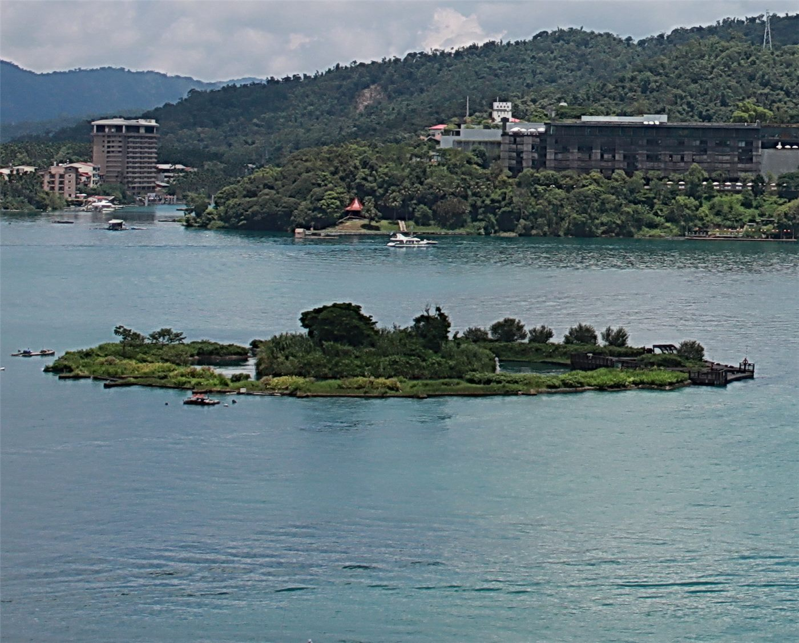

르웨탄 ‘죽음의 거품’ 재현… 외래어종 전기 포획 8배 급증
대만 르웨탄(日月潭)에서 이른바 ‘죽음의 거품’ 현상이 다시 나타나면서, 외래어종 어호(魚虎)의 전기 포획량이 최근 약 8배로 늘었다. 호수 생태계 관리가 과제로 떠올랐다.
정가호 기자 · 2026.07.22
橋대만

르웨탄에서 ‘죽음의 거품’이 재현되고, 외래 포식어종 어호의 전기 포획이 8배 가까이 늘었다고 대만 연합보가 전했다. 특정 요인과의 관련성이 지목된다.
광고 문의 · 300×250어호(재물치류의 육식성 외래어종)는 토종 어류를 잡아먹어 호수 생태계를 교란하는 것으로 알려져 있다. 관리 당국은 개체 수를 줄이기 위해 포획을 늘려 왔다.
외래종 문제는 생태계의 균형을 무너뜨려 어업과 관광에도 영향을 준다. 한번 자리 잡은 외래종을 제거하기는 어렵고, 지속적 모니터링과 포획, 유입 차단이 함께 필요하다.
‘죽음의 거품’ 같은 현상은 수질·산소 농도 변화와 관련될 수 있어 정밀한 조사가 요구된다. 생태 교란과 환경 변화가 겹칠 때 호수 생태계는 더 취약해진다.
華橋時報는 환경과 생태의 변화가 결국 사람의 삶과 지역 경제로 되돌아온다는 점을 전한다. 자연을 지키는 일은 특정 지역만의 과제가 아니라 모두의 몫이다.
출처·참고 (사실 확인용 — 본문은 직접 재작성)
· 聯合報
· 聯合報